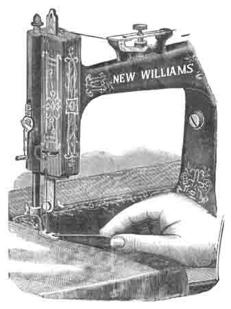
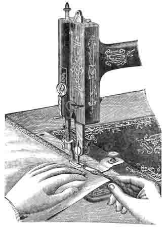
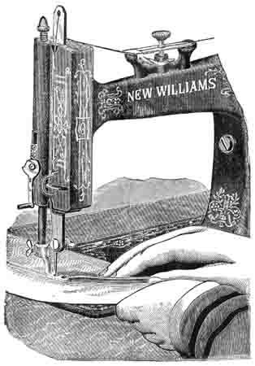
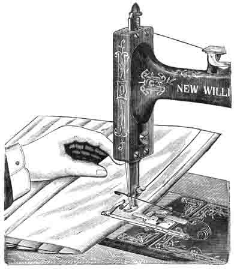
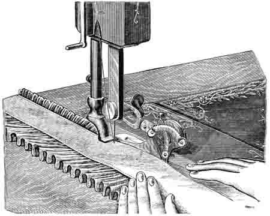
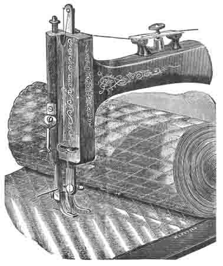
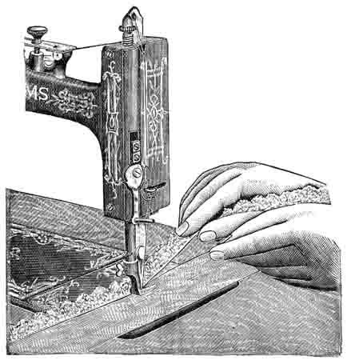
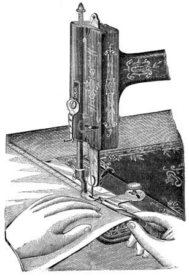

THE NEEDLEBAR
Online Manuals Section
NEW WILLIAMS SEWING MACHINES
USING THE ATTACHMENTS
NARROW HEMMING
(See Opposite Page.)
Put the HEMMER in place of the PRESSER-FOOT, and hold it up by the lowest lift. Have the under thread drawn up through the needle-hole.
Turn the right hand edge of the work upward into the scroll of the HEMMER, while passing it from you through the HEMMER, until it inclines over to the left, and forms a hem which must lay under the Needle. Then let the Hemmer down.
As you start to sew, pull gently on the ends of the thread to help the work along one or two stitches until the FEED catches it, then rest your hands back on the table and gently hold back on the work to keep it smooth and in line with the feed. As it runs through the hands, turn it (enough to fill the hemmer) straight up from the table. Do not attempt to fold it over nor to place it in the hemmer, but keep your hands so far away that the hemmer can act freely, when it will only require the proper quality of goods to make an absolutely perfect hem.
To bring the stitching close on the edge of the hem, the hemmer should be set close to the needle; but for coarse, rough work, it is well to set it off a little.

NARROW HEMMING
(See Opposite Page.)
This Hemmer is furnished with the Machine without extra charge.
THE HEMMER SET
(See Opposite Page.)
This set consists of four Plate Hemmers and a Binder, which are adjusted to the bed plate of Machine, and held in place by the gauge screw, and are used with the usual sewing foot. These Hemmers are very convenient for general family use, making good even hems on all kinds of goods, straight or bias, even when seams have to be crossed.
IN setting the Hemmers, they can be moved either to the right or left, if found necessary, in order to get the stitch in the proper position on the hem.
Take the end of the piece to be hemmed and turn down the edge for a distance of about three inches, and about a quarter of an inch in width. Enter the doubled edge of the goods into the scroll of the hemmer, and pass it out under and beyond the foot; then fold again that part of the goods which has passed through the hemmer and draw it towards you, until the double-folded portion comes directly under the needle. Let down the PRESSER-FOOT, start the machine, and guide the material so that it will just fill the scroll of the hemmer without crowding it.
The shoulder of the Guide-screw is prevented from injuring the attachments by means of a small leather washer; be careful that the washer does not drop off and be lost.

WIDE HEMMING
(See Opposite Page.)
The Hemmer set contains four Hemmers and a Binder.
FELLING
(See Opposite Page.)
If the HEMMER (which is also the FELLER) is on, it can be used simply as a presser in running up the seam, the edges of which should be trimmed if necessary, as in hand felling.
Open the work flat, wrong side up, the seam standing up straight, and taking the work near the beginning of the first seam in the left hand, and the ends of the thread in the right hand, draw the edges into the FELLER, and let down the FELLER without disarranging the work.
Slightly lengthen the stitch and sew the second seam.
NOTE: - The WIDE EDGE should be of such a size as to just fit the FELLER, and should be kept smooth. The NARROW EDGE should be TRIMMED as close as security permits. In sewing the second seam of a fell, the first seam should pass close to the left hand edge of the opening of the FELLER, over which BOTH EDGES of the cloth should be made to pass. The FELLER may be adjusted to the right or left, so as to sew close on the edge of the fell, or near the first seam, as desired.
_____________
THE UNDER-BRAIDER
Remove the NEEDLE-PLATE and adjust in its place the BRAIDER-PLATE. Remove the front slide, and turn back the CAP that covers BRAID RECESS in BRAIDER-PLATE, and place the BRAID in the channel which is in the BED-PLATE under the side, and along into the BRAID-RECESS in BRAIDER-PLATE; let the end of the BRAID lay over the FEED-TEETH; then swing the CAP back over the BRAID and replace the slide, taking care that the BRAID remains in its proper place in the channel.
By means of the THUMB-NUT, which will be found on the lower part of the arm of Machine just back of the NEEDLE-BAR, adjust the VIBRATOR so that when operating the Machine the presser-foot will be raised slightly off the goods when the needle is down. Proceed to work with a rather long stitch and tight tension.
NOTE; - For under-braiding the pattern is stamped or traced on the wrong side of the goods, which must be uppermost while the braiding is being done.
This removes the difficulty experienced in turning sharp corners, and renders the braiding of the most intricate patterns a comparatively easy matter.

(See opposite page.)
This operation is performed with the hemmer.
TUCKING
See opposite page.
With the GUIDE-SCREW, attach the TUCKER to the Machine, adjusting the TUCKER-GAUGE as far from the NEEDLE to the right of the width of the tuck desired.
Adjust the CREASING-END of the TUCKER at such a distance to the left of the NEEDLE as is equal to DOUBLE the WIDTH of the TUCK and the DESIRED SPACE BETWEEN the tucks, TAKEN TOGETHER.
Note: - When no space is desired between tucks, it will, of course, only be necessary to move the CREASING-END to the left of the needle a distance equal simply to double the width of the tuck.
The TUCKER being arranged as desired, unite the parts by tightening the SMALL THUMB-SCREW, and connect the WORKING ARM of the TUCKER with the machine by ATTACHING the HOOK to the NEEDLE.
Fold the right-hand edge of the cloth under for the first tuck, and the PRESSER-FOOT being raised, place the work in the Machine with the fold close against the guide, after which lower the PRESSER-FOOT and proceed to sew.
As the work passes through the Machine it is CREASED for the fold of the NEXT TUCK, which is made the SAME AS THE FIRST.
|
ADVICE Never attempt to take the Machine apart, or you will be sure to get into trouble. Ladies sometimes boast that they "have taken their Sewing Machine all to pieces and put it together again." Nothing can be worse; it is a mistake to suppose that a Machine can be benefitted by being tampered with, by inexperienced parties. |

(See opposite page.)
(See opposite page.)
Take off the PRESSER-FOOT and put the RUFFLER in its place, as shown in the engraving. The SLOT in the ARM of the RUFFLER must be placed around the THUMB-NUT of the NEEDLE-CLAMP. Care should be taken to see that the needle passes down through the centre of the hole.
The goods to be ruffled are to be placed between the JAWS of the RUFFLER, and if bands are to be dewed on, they must be placed above and below the ruffle and separated from it by the JAWS. Either one or two bands may be sewed on, or the ruffle can be made without any band, as desired.
The fullness of the gathers may be changed, by moving the regulating LEVER. Move it outward (toward yourself) to INCREASE the fullness and inwards to DIMINISH it. The notches on the plate will hold it in the required position. The fullness is also influenced by the length of the stitch. With a short stitch, and a scant movement of the Ruffler, a fine gather will be made; but if the movement of the Ruffler be increased, the gathers assume more of the form of pleats, and then, by a long stitch, you can again get the gathered appearance.
____________________
SHIRRING
Among the attachments will be found a piece similar to the front shuttle slide, but having a small notched plate attached to it near one end. This is known as the Shirring Blade, and is used only in connection with the RUFFLER.
To prepare the Ruffler for Shirring remove the lower blade; this is done by loosening the screw at the back of the ruffler-foot and slipping it out toward the right. Remove the front slide that covers the shuttle, and put the shirring-plate in its place; when this is properly done the blade covers the feed. This enables you to bring the shirring blades into the centre of your goods, or rather to place your goods between the blades at any required distance from the edge.

RUFFLING
(See opposite page.)
A great variety of work can be done with this Attachment.

QUILTING
To attach the Quilter, pass the ROUND ARM of it from right to left through the hole in PRESSER BAR, bringing the flat or GUIDING-ARM at a distance to the right of the NEEDLE equal to the desired distance between the seams, and just high enough to allow the work to pass freely under it. Fasten by the screw at the back of the PRESSER-BAR.
Keep the first row of stitching straight by a mark or basting thread. All succeeding rows are made straight, and at uniform distance, by keeping the row last made steadily under the guide. In squares or diamonds, the appearance of the work is better if on equal bias.

SEWING ON LACE AND HEMMING AT ONE OPERATION
Start a narrow hem, as shown on page twelve. When the hem is well started, raise the PRESSER, turning the LIFTER from you, and also raise the NEEDLE. Then pass the end of the lace through the slot in the side of the HEMMER, and on top of the hem.
Be sure that the hem is not displaced in the HEMMER, and that the needle goes down through the lace and them together. Then let down the PRESSER and guide the lace over the front of the HEMMER, keeping it well into the slot.

BINDING
Attach the BINDER to the bed of the Machine by the GUIDE SCREW; set the screw firmly, so that the Binder will not move.
For raw edge binding the strips must be cut seven-eighths of an inch in width and on a true bias. Pass the binding directly into the scroll of the Binder, and the material to be bound between the upper and lower scrolls; guide the cloth with the left hand, and let the binding pass easily through the finger of the right. If the stitching is too near or too far from the edge, move the Binder a trifle to the right or left, as occasion may require.
Part One | Part Two | Part Three | Part Five